تکلیف ۱. خلاصهٔ مطالعه
عدد نویز. عدد نویز نشان میدهد نویز افزودهٔ گیرنده چقدر نسبت سیگنال به نویز را از ورودی تا خروجی کاهش میدهد. در تعریف استاندارد، منبع ورودی تطبیقیافته و در دمای مرجع است. گیرنده هم نویز ورودی را تقویت میکند و هم نویز خودش را به آن میافزاید. سهم نویز خود گیرنده را میتوان با دمای نویز معادل ، ارجاعشده به ورودی، بیان کرد. ضریب نویز خطی و عدد نویز بر حسب دسیبل از رابطهٔ زیر به دست میآیند. در پهنای باند یکسان، عدد نویز کمتر به معنی کف نویز پایینتر و امکان دریافت سیگنال ضعیفتر با همان نسبت سیگنال به نویز است. در گیرندهٔ چندطبقه نیز، طبق رابطهٔ فریس، بهرهٔ طبقات ابتدایی سهم نویز طبقات بعدی را در ورودی کل زنجیره کاهش میدهد. [1]
روش Y-Factor. یک منبع نویز کالیبره در دو حالت روشن و خاموش، بهترتیب با دماهای نویز معادل و ، به ورودی وصل میشود. نسبت توانهای نویز خروجی برابر است با چون بهره و پهنای باند در هر دو خواندن یکساناند، ضریب مشترک در نسبت حذف میشود. به همین دلیل، اختلاف دو خواندهٔ خروجی بر حسب dBFS برای بهدست آوردن بر حسب دسیبل کافی است. اگر باشد، با تعریف خطی نتیجه میشود که . اعتبار این رابطه به ثابتماندن بهره و کارکرد گیرنده در ناحیهٔ خطی وابسته است. عدمقطعیت ENR، عدم تطبیق امپدانس و نوسان آماری توان نویز نیز بر نتیجه اثر میگذارند. میانگینگیری در هر حالت، سهم نوسان آماری را کاهش میدهد. [2]
نقطهٔ تقاطع مرتبهٔ سوم. در آزمون دوتنی، غیرخطیبودن گیرنده در فرکانسهای و مؤلفههای ناخواستهٔ IM3 ایجاد میکند. در ناحیهٔ پیش از تراکم، با هر افزایش توان ورودی هر دو تن، توان هر تن در خروجی تقریباً و توان هر محصول IM3 تقریباً افزایش مییابد. IP3 تقاطع فرضی امتداد این دو خط است. اگر آن را به ورودی ارجاع دهیم، IIP3 به دست میآید. برای توان ورودی هر تن ، اختلاف سطح تن و محصول در خروجی تقریباً است. بنابراین IIP3 پیشبینی میکند که در یک توان ورودی مشخص، محصولات مرتبهٔ سوم چقدر پایینتر از تنهای اصلی قرار میگیرند. با مقایسهٔ سطح پیشبینیشدهٔ IM3 با کف نویز میتوان حد بالای محدودهٔ دینامیکی بدون اسپور را برآورد کرد. [1]
منابع
[1] D. M. Pozar, Microwave Engineering, 4th ed., Wiley, 2012, ch. 10, secs. 10.1–10.4.
Keysight Technologies, Noise Figure Measurement Accuracy – The Y-Factor Method, Application Note 5952-3706E, 2014.
تکلیف ۲. حل پرسشهای نظری
۱. دمای نویز معادل و رابطهٔ فریس
دمای نویز معادل. با دمای مرجع ، ابتدا عدد نویز را از دسیبل به ضریب نویز خطی تبدیل میکنیم.
| دمای نویز معادل | ضریب نویز خطی | عدد نویز |
|---|---|---|
عدد نویز زنجیره. بهره و ضریب نویز در رابطهٔ فریس خطی هستند. فرض میکنیم فیلتر غیرفعال، تطبیقیافته و در دمای مرجع است. در این حالت ضریب نویز فیلتر با تلفات خطی آن برابر است.
برای ترتیب تقویتکننده، فیلتر و طبقهٔ مخلوطکننده و مبدل داریم
با قرار دادن فیلتر قبل از تقویتکننده، ترتیب جملههای فریس عوض میشود.
با این جابهجایی، عدد نویز کل حدود زیاد میشود. در ترتیب اول، بهرهٔ تقویتکننده سهم نویز فیلتر را در ورودی کل کوچک میکند. در ترتیب دوم، فیلتر پیش از تقویت، سیگنال را تضعیف میکند و چون است، سهم نویز تقویتکننده در رابطهٔ فریس بزرگتر میشود. سهم طبقهٔ آخر در هر دو محاسبه است، چون به حاصلضرب بهرهٔ دو طبقهٔ پیش از خودش بستگی دارد.
۲. استخراج رابطهٔ Y-Factor
حالت خاموش در دمای مرجع. طبق رابطهٔ شمارهٔ ۱ راهنمای آزمایش، توان نویز خروجی برای منبعی با دمای نویز برابر است. با بهره و پهنای باند یکسان در دو اندازهگیری و داریم با کمکردن یک و استفاده از تعریف خطی و نتیجه میشود
حالت خاموش با دمای متفاوت. برای ، دمای را در نسبت دو توان قرار میدهیم و تعریف را بر اساس دمای مرجع به کار میبریم. اگر را بر اساس اختلاف واقعی دو حالت تعریف کنیم، ضریب نویز برابر است با با قرار دادن ، جملهٔ تصحیح صفر میشود و به رابطهٔ شمارهٔ ۵ راهنمای آزمایش میرسیم.
اثر تضعیفگر بر ENR. تضعیفگر تطبیقیافته در دمای با تلفات ، تلفات خطی دارد. در تعادل حرارتی، وقتی ورودی در باشد، دمای نویز خروجی هم است. بنابراین برای ورودی با دمای نویز ، سهم عبوری و سهم نویز خود تضعیفگر است. سهم نویز خود تضعیفگر در اختلاف دمای دو حالت حذف میشود.
۳. حساسیت عدد نویز به خطای خواندن
با ، مقدار واقعی است. اگر با خطای خوانده شود، مقدار خطی خواندهشده و عدد نویز محاسبهشده برابر است با خطای عدد نویز در جدول از به دست آمده است.
| خطای عدد نویز |
خطای عدد نویز |
عدد نویز واقعی | ||
|---|---|---|---|---|
برای توضیح اختلاف دو حالت، از رابطهٔ عدد نویز نسبت به مشتق میگیریم. در حالت دوم و اندازهٔ ضریب حساسیت است. تقریب خطی برای خطای در ، خطای حدود در عدد نویز میدهد. مقادیر دقیق جدول نشان میدهند که اثر خطای مثبت و منفی در این حالت نامتقارن است.
قاعدهٔ انتخاب ENR. ENR را طوری انتخاب میکنیم که از فاصلهٔ کافی داشته باشد و گیرنده در حالت روشن در ناحیهٔ خطی کار کند. یک معیار اولیه، انتخاب دستکم در حدود عدد نویز مورد انتظار است. اگر این دو برابر باشند، یا حدود خواهد بود و خطای در خواندن ، در تقریب خطی حدود خطا در عدد نویز ایجاد میکند.
۴. مدل غیرخطی، محصولات IM3 و نقطهٔ تقاطع
دامنهٔ محصولات مرتبهٔ سوم. در مدل ، ورودی دوتنی را بهصورت در نظر میگیریم. دو تن و بسط مکعب ورودی به شکل زیرند. مؤلفهٔ از جملهٔ ایجاد میشود. با اتحاد و تبدیل ضرب کسینوسها به جمع، داریم با ضرب در و تکرار همین محاسبه برای ، قدر مطلق دامنهٔ دو محصول نزدیک به تنها به دست میآید.
شیب سه و رابطهٔ IIP3. اگر دامنهٔ دو تن برابر باشد، توان ورودی هر تن با و توان خروجی IM3 با متناسب است. پس . در مقیاس دسیبل، شیب خط IM3 برابر ۳ و شیب خط تن اصلی در ناحیهٔ سیگنال کوچک تقریباً ۱ است. اگر فاصلهٔ سطح تن و IM3 در خروجی باشد، با افزایش در توان ورودی هر دو تن، این فاصله به میرسد. تقاطع امتداد دو خط در رخ میدهد. در این رابطه توان ورودی هر تن بر حسب dBm و اختلاف سطح خروجی بر حسب dB است.
استخراج فاصلهٔ . برای ، ورودی تکتنی را در نظر میگیریم. ضریب کسینوس در فرکانس اصلی است. با علامت مخالف و ، نسبت دامنهٔ واقعی به دامنهٔ خطی در ناحیهٔ تراکم اولیه است که در آن . افت یکدسیبلی توان معادل نسبت دامنهٔ است، پس در تقاطع دوتنی، امتداد دامنهٔ خطی تن و دامنهٔ IM3 برابر میشوند. با تناسب توان ورودی و مربع دامنه و ارجاع هر دو نقطه به ورودی، داریم
دو محدودیت تقریب.
۱. عدد از یک مدل مکعبیِ بیحافظه با رفتار تراکمی به دست میآید. اگر جملههای مرتبهٔ بالاتر نزدیک نقطهٔ تراکم سهم مهمی داشته باشند، فاصلهٔ دو نقطه تغییر میکند.
۲. اگر عامل اصلی اعوجاج، برش نمونهها در ADC باشد، IM3 میتواند نزدیک مقیاس کامل با شیبی متفاوت از ۳ رشد کند. در این حالت برونیابی بر اساس شیب سه برای برآورد IIP3 قابل اتکا نیست.
۵. محاسبهٔ SFDR برای دو پهنای باند
با ، کف نویز ارجاعشده به ورودی برای پهنای باند از رابطهٔ زیر به دست میآید. در مرز بالای SFDR، محصول IM3 به کف نویز میرسد. سطح محصول ارجاعشده به ورودی برابر است با با برابر گذاشتن آن با کف نویز و کمکردن کف نویز از توان ورودی متناظر، به رابطهٔ زیر میرسیم.
| SFDR | کف نویز ورودی | جملهٔ پهنای باند | پهنای باند |
|---|---|---|---|
برای هر دو ردیف، است. توان نویز در کل باند اندازهگیری با متناسب است. کاهش پهنای باند از به ، کف نویز را پایین میآورد. در نتیجه، SFDR بهاندازهٔ افزایش مییابد.
۶. اثر افزایش بهره در گیرندهٔ SDR
کف نویز ناشی از ADC. برای ارجاع توان نویز ADC به ورودی گیرنده، آن را بر بهرهٔ توانی خطی پیش از ADC تقسیم میکنیم. با افزایش بهره، سهم نویز ADC در ورودی پایینتر میآید. اگر ADC هشتبیتی را ایدهآل و را توان سینوس تماممقیاس در بهرهٔ صفر فرض کنیم، SNR کوانتیزه تقریباً است. در این مدل، توان نویز کوانتیزهٔ ارجاعشده به ورودی در کل باند نایکوئیست از حدود به میرسد.
مقیاس کامل و نقطهٔ تراکم. با بهرهٔ بیشتر، یک سیگنال ورودیِ ضعیفتر همان سطح قبلی را در ADC ایجاد میکند. بنابراین سطح تماممقیاس ارجاعشده به ورودی از به میرسد. اگر محدودیت ADC تراکم را تعیین کند، ورودی هم پایینتر میآید. مقدار دقیق از توان ورودی متناظر با افت یکدسیبلی در منحنی بهره خوانده میشود.
حد بهبود عدد نویز. بهرهٔ بیشتر، سیگنال و نویز موجود در بخش آنالوگِ پیش از ADC را با هم تقویت میکند. سهم نویزی که خود ADC اضافه میکند، هنگام ارجاع به ورودی کوچکتر میشود. وقتی سهم ADC از نویز بخش آنالوگ خیلی کوچکتر شود، عدد نویز کل به عدد نویز بخش آنالوگ نزدیک میشود و افزایش بیشتر بهره بهبود اندکی ایجاد میکند.
تکلیف ۳. محاسبهٔ طراحی آزمایش
جدول ۴. جدول طراحی
| دلیل عددی | مقدار | کمیت |
|---|---|---|
| در هر دو حالت، ENR پنج دسیبل بالاتر از عدد نویز است و برابر میشود. | بهترتیب و . | ENR مؤثر برای عدد نویز حدود ۷ و ۳۰ دسیبل |
| هر دسیبل تلفات مسیر، ENR مؤثر را یک دسیبل کم میکند. در حالت دوم، منبع ۱۵ حتی بدون تضعیف اختلاف ایجاد میکند. | برای عدد نویز ۷، بهترتیب و تضعیف برای منابع ۱۵ و ۳۵. برای عدد نویز ۳۰، منبع ۳۵ بدون تضعیف. منبع ۱۵ برای این هدف کافی نیست. |
تضعیف لازم پس از منبع نویز با ENR برابر ۱۵ یا ۳۵ دسیبل |
| انحراف معیار هر خواندن توان و انحراف معیار حدود است. | برای هر حالت روشن و خاموش. | زمان میانگینگیری برای نوسان کمتر از در نوار |
| انتهای بازه ۵ دسیبل حاشیه تا سقف راهنما دارد. گام ریز برای خواندن به کار میرود. | تا ، با گام و گام نزدیک تراکم. سقف مقرر است. | بازه و گام جاروب توان تکتنی و بیشینهٔ توان مجاز در ورودی |
| آفستهای شکل ۶ در و جایگذاری میشوند. | تنها در آفست و ، با فاصلهٔ . محصولات در آفست و . | فرکانس دو تن، فاصلهٔ آنها و جای محصولات مرتبهٔ سوم |
| با فرض IIP3 برابر ، حاشیهٔ IM3 در حالت عدد نویز ۳۰ برابر است. | حداقل نظری برای عدد نویز ۷ و ۳۰، بهترتیب و . انتخاب در بهرهٔ پایین برای هر تن است. | توان هر تن برای قرار گرفتن IM3 دستکم بالاتر از کف نویز نوار |
دلایل عددی انتخابها
۱. انتخاب ENR مؤثر
در روش Y-Factor، نسبت توان نویز حالت روشن به حالت خاموش است. با تبدیل ENR و عدد نویز از دسیبل به مقیاس خطی، از رابطهٔ داریم در این طراحی، ENR مؤثر را بالاتر از عدد نویز مورد انتظار انتخاب میکنیم. برای هر دو حالت داریم طبق محاسبهٔ حساسیت در تکلیف دوم، اندازهٔ ضریب حساسیت عدد نویز به برابر است. در این نقطه ضریب حدود است و خطای در ، در تقریب خطی حدود خطا در عدد نویز ایجاد میکند. این محاسبه با بهرهٔ ثابت و کارکرد خطی گیرنده در هر دو حالت انجام میشود.
۲. تضعیف لازم پس از منبع نویز
طبق نتیجهٔ تکلیف دوم، در دمای مرجع ، تلفات مسیر ENR مؤثر در ورودی را به همان اندازه کاهش میدهد. بنابراین تضعیف کل لازم برابر است با برای عدد نویز ۷، هدف است. منبع ۱۵ به و منبع ۳۵ به تضعیف نیاز دارد. برای عدد نویز ۳۰، منبع ۳۵ بهتنهایی ENR هدف را میدهد. منبع ۱۵ در این حالت، حتی بدون تضعیف، نسبت زیر را ایجاد میکند. افزودن تضعیفگر این اختلاف را کوچکتر میکند. اعداد جدول با فرض تلفات ناچیز کابل نوشته شدهاند. اگر تلفات کابل معلوم باشد، آن را جزئی از حساب میکنیم.
۳. زمان میانگینگیری در نوار
نوسان را بهصورت انحراف معیار در نظر میگیریم. برای نویز گاوسی در یک نوار تقریباً مستطیلی با پهنای باند مؤثر ، در زمان حدود نمونهٔ مستقل توان داریم. نسبت انحراف معیار میانگین توان به خود توان تقریباً است. پس با میانگینگیری در مقیاس خطی و سپس تبدیل به دسیبل، داریم برای یک خواندن توان و ، حد زمانی متناظر با نوسان برابر است با در عمل، تفاضل دو خواندن مستقل توان در حالت روشن و خاموش است. واریانس این تفاضل برابر مجموع واریانسهای دو خواندن است. بنابراین برای همین دقت در ، حد زمانی به برای هر حالت میرسد. با انتخاب برای هر حالت، داریم در ENR انتخابی، با ضریب حساسیت ، سهم نوسان آماری در عدد نویز حدود خواهد بود.
۴. بازه و گام جاروب تکتنی
سطوح جدول در ورودی واقعی گیرنده، پس از کابل و تضعیفگر، تعریف شدهاند. در نوار اندازهگیری و برای عدد نویز ، کف نویز ورودی برابر است با در نتیجه، تن در نقطهٔ شروع حدود بالاتر از کف نویز قرار میگیرد. جاروب را با گام آغاز میکنیم و خط مرجع را از نقاطی میسازیم که تن بهخوبی دیده میشود و بهره تقریباً ثابت است. سپس اطراف نقطهای که توان خروجی یک دسیبل از خط مرجع پایینتر میافتد، جاروب را با گام تکرار میکنیم. پس از عبور روشن از این نقطه، جاروب پایان مییابد.
طبق بخش ایمنی راهنمای آزمایش، بیشینهٔ توان مجاز در ورودی است. انتهای بازهٔ طراحی است و حاشیه دارد. برای تبدیل توان تنظیمشدهٔ ژنراتور به توان واقعی ورودی، تلفات مسیر اتصال را از آن کم میکنیم.
۵. فرکانس دو تن و محصولات مرتبهٔ سوم
طبق شکل ۶ راهنمای آزمایش، آفست دو تن از مرکز تنظیم گیرنده بهترتیب و است. اگر فرکانس مرکزی باشد، فرکانسهای واقعی دو تن و هستند. برای خواندن توان محصولات، نوارهای را روی آفستهای و مرکز میکنیم. فاصلهٔ هر محصول از نزدیکترین تن است، در حالی که نیمپهنای هر نوار اندازهگیری است.
۶. توان هر تن برای اندازهگیری IM3
مقدار را از مثال ۳ راهنما بهعنوان فرض اولیهٔ طراحی میگیریم. کف نویز ارجاعشده به ورودی در نوار از رابطهٔ زیر به دست میآید. در ناحیهای که شیب مکعبی برقرار است، سطح هر محصول IM3 ارجاعشده به ورودی برابر است با شرط دیدهشدن محصول دستکم بالاتر از کف نویز چنین است. در حالت عدد نویز ۷، کف نویز است و میشود. در حالت عدد نویز ۳۰، کف نویز است و به دست میآید. با انتخاب برای هر تن در بهرهٔ پایین، داریم در حالت عدد نویز ۳۰، فاصلهٔ این محصول تا کف نویز است که شرط را برآورده میکند.
در بهرهٔ ، تبدیل در مدل شکل ۶، مقیاس کامل تکتن را حدود در ورودی قرار میدهد. با دو تن همتوان، جمع دامنهها در قله میتواند دو برابر دامنهٔ یک تن باشد. بنابراین برای هر تن حدود حاشیهٔ بیشتر لازم است و حد معادل هر تن حدود میشود. این سطح پایینتر از حد نظری برای عدد نویز ۷ است. در این بهره، برش ADC میتواند پیش از رسیدن به توان لازم برای مشاهدهٔ محصول مکعبی رخ دهد. توانهای جدول برای ناحیهٔ مکعبی در بهرهٔ پایین طراحی شدهاند.
تکلیف ۴. شبیهسازی آفلاین گیرنده
۱. اندازهگیری عدد نویز با روش Y-Factor
روش اجرا. فلوگراف lab02_sim.grc در GNU Radio Companion اجرا شد. در حالت خاموش، ورودی بهصورت بار در دمای مدل شد. در حالت روشن، نویز افزودهٔ منبع با ENR انتخابشده اعمال شد. برای هر بهره، توان خروجی هر دو حالت از نمایشگر نویز در نوار خوانده شد.
انتخاب ENR. در بهرهٔ ، با توجه به عدد نویز مورد انتظار حدود ، مقدار مطابق جدول طراحی انتخاب شد. در بهرهٔ ، سهم نویز مبدل ارجاعشده به ورودی بیشتر است. در این بهره از استفاده شد تا اختلاف دو خوانده بهخوبی قابل اندازهگیری باشد. در حالت روشن، سطح کل خروجی برای بهرههای ۴۰ و ۱۰ بهترتیب حدود و بود.
محاسبهٔ عدد نویز. با ثابتبودن بهره و پهنای باند در دو حالت، ضریب تبدیل مشترک در نسبت توانهای خروجی حذف میشود. اختلاف خواندههای dBFS، نسبت را بر حسب دسیبل میدهد. ضریب نویز خطی و عدد نویز NF از رابطههای زیر به دست میآیند.
نتایج اندازهگیری در نوار
با جایگذاری خواندههای ثبتشده در شکلهای ۱ تا ۴ داریم
تفسیر. با کاهش بهره از ۴۰ به ۱۰ دسیبل، عدد نویز گیرنده حدود افزایش یافت. در مدل، نویز مبدل بعد از طبقهٔ بهره اضافه میشود. با کاهش بهره، نویز ورودی کمتر تقویت میشود و سهم نسبی نویز مبدل در توان نویز خروجی بیشتر میشود.
تصاویر اجرای فلوگراف در بهرهٔ ۴۰ دسیبل
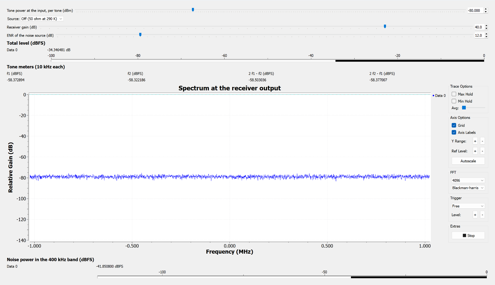
بازکردن نسخهٔ اصلی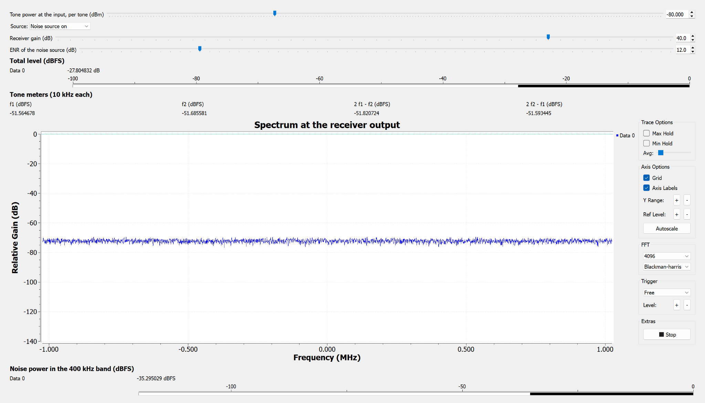
بازکردن نسخهٔ اصلیتصاویر اجرای فلوگراف در بهرهٔ ۱۰ دسیبل
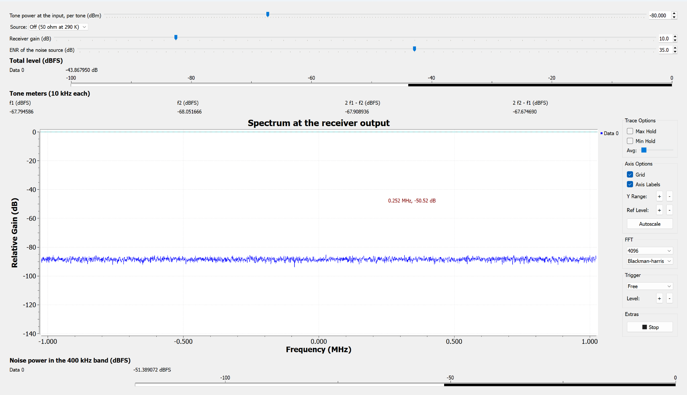
بازکردن نسخهٔ اصلی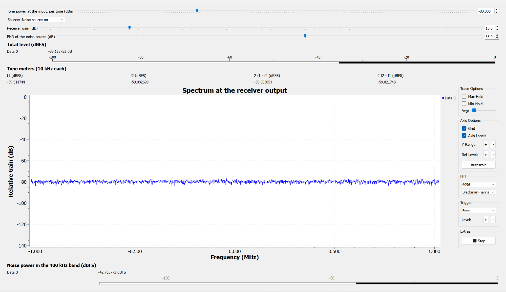
بازکردن نسخهٔ اصلی۲. اندازهگیری نقطهٔ تراکم یکدسیبلی
روش اجرا. فلوگراف lab02_sim.grc روی حالت تکتن One tone قرار گرفت. در هر یک از بهرههای و ، توان ورودی تن تغییر داده شد و توان خروجی از نمایشگر در نوار خوانده شد. گام جاروب در ناحیهٔ خطی و در نزدیکی تراکم بود.
مرجع خطی. برای هر بهره ، خط مرجع با شیب یک را از پنج نقطهٔ کمتوان جدول جاروب به دست آوردیم. این نقاط در بهرهٔ ۴۰ از تا و در بهرهٔ صفر از تا هستند. با بر حسب dBm و بر حسب dBFS، داریم
استخراج نقطهٔ تراکم. برای هر بهره، دو توان ورودی مجاور و را که افت در آنها بهترتیب کمتر و بیشتر از بود انتخاب کردیم. با درونیابی خطی، توان ورودی متناظر با این افت برابر است با
توان ورودی متناظر با تراکم یکدسیبلی
تفسیر. در فلوگراف، مقیاس کامل تکتن در تقریب خطی است و تنظیم شده است. در بهرهٔ ۴۰، ورودی از حدود به مقیاس کامل خطی میرسد و برش مبدل رشد توان خروجی را محدود میکند. چون مؤلفههای I و Q جداگانه برش میخورند، دامنهٔ مؤلفهٔ اصلی پس از برش میتواند از دامنهٔ مرجع یک بیشتر شود. این رفتار خواندههای مثبت را در بخش تراکم توضیح میدهد.
در بهرهٔ صفر، نقطهٔ اندازهگیریشده پایینتر از سطح مقیاس کامل خطی است. مدل مکعبی فلوگراف با ، مقدار را پیشبینی میکند که به مقدار بهدستآمده از جاروب نزدیک است.
منحنیهای تراکم و دادههای جاروب تکتن
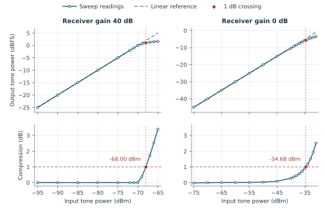
بازکردن نسخهٔ اصلیخواندههای جاروب توان تکتن
تصاویر اجرای جاروب تکتن نزدیک نقطهٔ تراکم
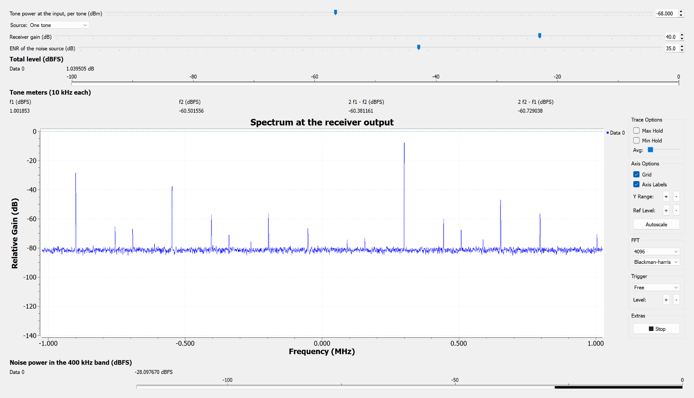
بازکردن نسخهٔ اصلی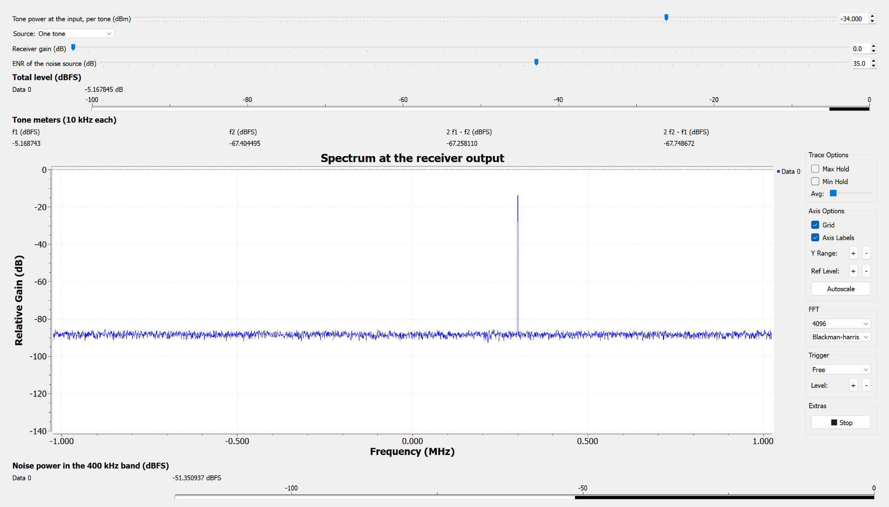
بازکردن نسخهٔ اصلی۳. آزمون دوتنی در بهرهٔ صفر و اندازهگیری IIP3
آرایش آزمون. در فلوگراف lab02_sim.grc با بهرهٔ ، ابتدا کف نویز چهار نوار در حالت Off ثبت شد. سپس با انتخاب Two tones، دو تن همتوان در آفستهای و اعمال شدند. توان ورودی هر تن از تا با گام تغییر کرد. دو محصول مرتبهٔ سوم در آفستهای و از نمایشگرهای خوانده شدند.
خواندههای چهار نمایشگر در آزمون دوتنی
Off |
||||
تصحیح کف نویز و برازش. برای هر محصول ، توان نویز نوار متناظر را در مقیاس خطی از خوانده کم کردیم. در روابط زیر توان ورودی هر تن بر حسب dBm است. بیشترین تصحیح بود. کمترین فاصلهٔ محصول تصحیحشده از کف نویز بود. بر هر هفت نقطهٔ تصحیحشده در هر نوار، خط را با برازش کردیم.
استخراج IIP3. در این بازه، خروجی تنهای اصلی حدود تا پایینتر از خط کوچکسیگنال بود. برای استخراج تقاطع، خط مرجع بهرهٔ صفر از قسمت ۲ را با شیب یک امتداد دادیم.
شیب و نقطهٔ تقاطع هر محصول مرتبهٔ سوم
شیبها به مدل مکعبی نزدیکاند. میانگین دو تقاطع است. از در قسمت ۲، برآورد به دست میآید. برآورد دوتنی بالاتر است.
منحنیهای آزمون دوتنی در بهرهٔ صفر
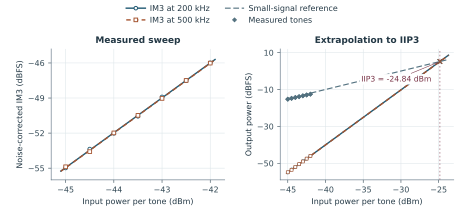
بازکردن نسخهٔ اصلی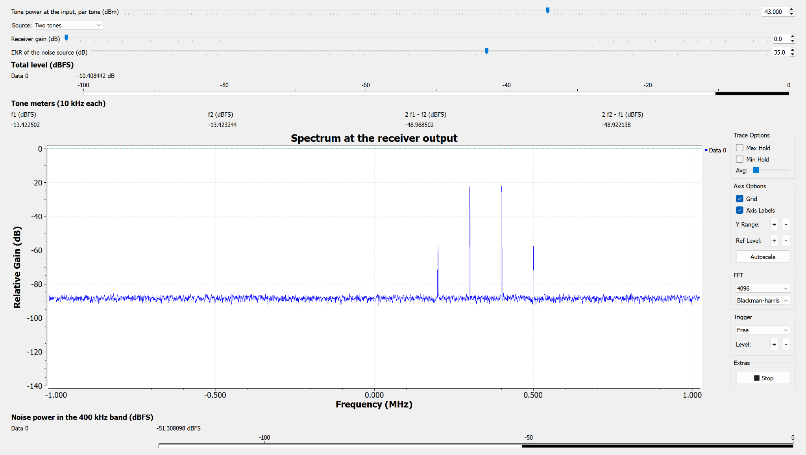
بازکردن نسخهٔ اصلی۴. آزمون دوتنی در بهرهٔ ۴۰ و اثر برش مبدل
آرایش آزمون. در فلوگراف lab02_sim.grc، بهره روی قرار گرفت. ابتدا خواندههای چهار نوار در حالت Off ثبت شدند. در حالت Two tones، توان ورودی هر یک از تنهای و از تا تغییر کرد. توان دو تن و محصولات و از نمایشگرهای نوار خوانده شد.
خواندههای آزمون دوتنی در بهرهٔ ۴۰ دسیبل
Off |
||||
آستانهٔ برش. طبق خط مرجع قسمت ۲، اگر توان ورودی هر تن بر حسب dBm باشد، دامنهٔ نرمالشدهٔ هر تن پیش از مبدل تقریباً است که . قلهٔ مجموع دو تن همدامنه میتواند به دو برابر دامنهٔ هر تن برسد. با حد برش واحد در هر شاخهٔ I/Q، آستانهٔ اسمی به دست میآید. در مدل فلوگراف است. در آستانهٔ برش، رابطهٔ توان محصول مکعبی را حدود پیشبینی میکند. این مقدار حدود پایینتر از کف نویز نوارهای محصول است.
ظهور محصولات. تا ورودی ، دو خواندهٔ محصول کمتر از با حالت خاموش اختلاف داشتند. در ، خواندههای نوارهای و بهترتیب و بالاتر از کف نویز قرار گرفتند. در ، هر دو محصول حدود بودند و میانگین توان دو تن پایینتر از خط مرجع بود.
شیبها در ناحیهٔ برش. جدول زیر تغییر خواندهٔ خام بر تغییر توان ورودی را در بازههایی نشان میدهد که خواندهٔ هر محصول دستکم از کف نویز فاصله داشت. شیب تن از میانگین دو خوانده بر حسب dBFS محاسبه شد.
تعیین IIP3 به بازهای با شیب یک برای تن و شیب سه برای محصول نیاز دارد. پیش از برش، محصولات مکعبی زیر کف نویزند. پس از برش، خود مبدل در فرکانسهای بینمدولاسیون مؤلفه ایجاد میکند و توان تنها با شیب کمتر از یک رشد میکند. تغییر شیب محصولات با سطح ورودی باعث میشود محل تقاطع برونیابیشده به بازهٔ برازش وابسته باشد.
منحنیهای آزمون و ثبت کف نویز در بهرهٔ ۴۰ دسیبل
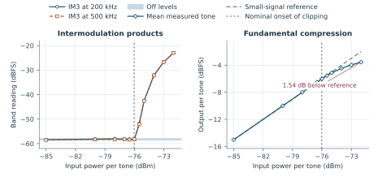
بازکردن نسخهٔ اصلی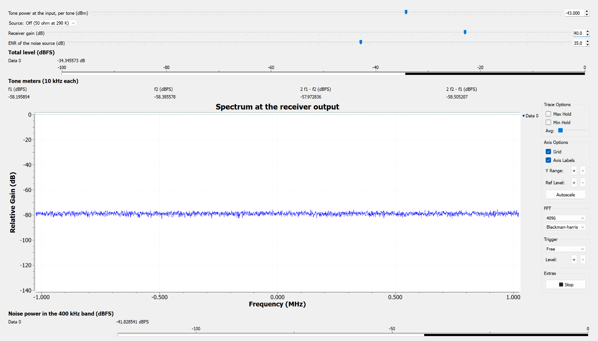
بازکردن نسخهٔ اصلیمقایسهٔ طیف دوتنی پیش و پس از برش
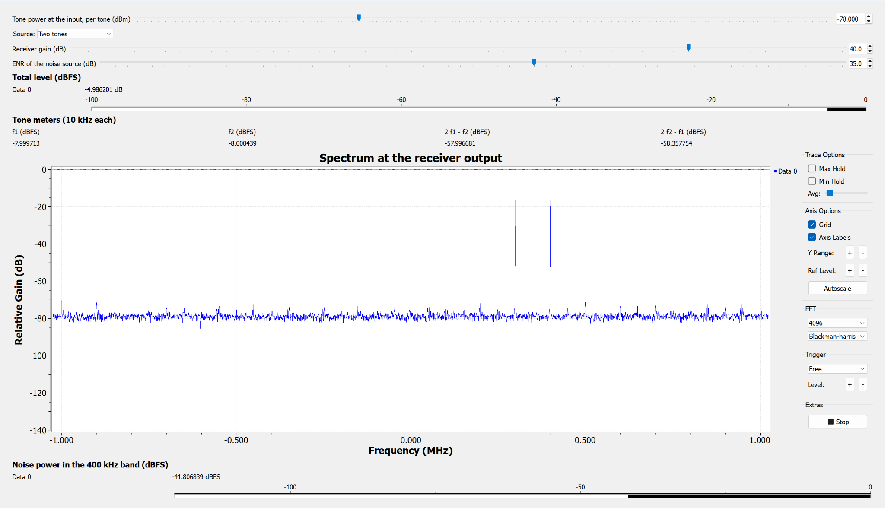
بازکردن نسخهٔ اصلی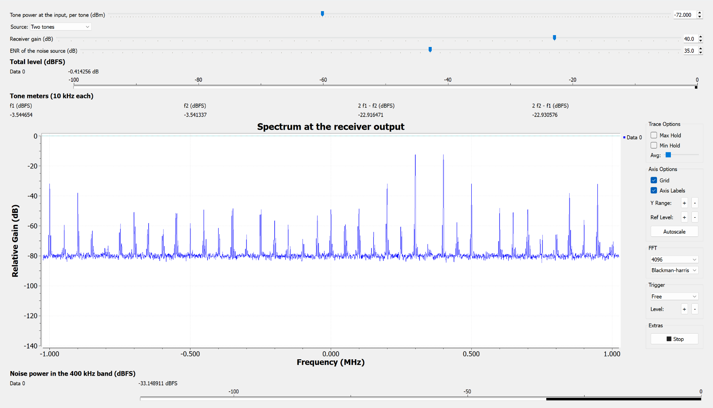
بازکردن نسخهٔ اصلی۵. اثر بهره بر فاصلهٔ نقطهٔ تراکم تا کف نویز
جدول این قسمت از روی مدل lab02_sim.grc محاسبه شد. از نتایج اندازهگیری قسمتهای ۱ و ۲ برای مقایسه استفاده کردیم.
عدد نویز. در مدل، ، و ضریب تبدیل توان ورودی بر حسب میلیوات به توان نرمالشدهٔ مبدل است. با و ، واریانس نویز هر شاخهٔ I/Q پیش از کوانتش را بهصورت زیر محاسبه کردیم. در حالت خاموش و در حالت روشن است. طبقهٔ ورودی در سطح نویز در تقریب خطی در نظر گرفته شد. اگر و نرمال استاندارد باشد، توان نویز خروجی است. امید ریاضی روی بازههای کوانتش محاسبه شد. سپس از نسبت توانهای مدل استفاده کردیم.
نقطهٔ تراکم ورودی. برای ورودی تکتن با توان بر حسب dBm، دامنهٔ مرجع است. دامنه پس از جملهٔ مکعبی طبقهٔ ورودی و پیش از مبدل شد. میانگین خروجی کوانتایزر هر شاخه با نویز در ۵۱۲ فاز تن محاسبه شد. از ضریب مؤلفهٔ اصلی خروجی ، نخستین متناظر با بهعنوان به دست آمد.
مقایسه در نوار ۱۰ کیلوهرتز. کف نویز به ورودی ارجاع داده شد تا با توان ورودی تراکم قابل مقایسه باشد.
نتایج محاسبه از مدل برای شش بهره
مقایسه با دادههای پیشین. اختلاف عدد نویز محاسبهشده با خواندههای قسمت ۱ در بهرههای ۱۰ و ۴۰ و اختلاف نقطهٔ تراکم با قسمت ۲ در بهرههای صفر و ۴۰، در هر مورد کمتر از بود. در بین شش بهره، بیشترین فاصله در مدل برای و برابر است. فاصلهٔ آن تا نتیجهٔ بهرهٔ ۲۰، پیش از گردکردن، فقط است.
تکلیف ۵. شبیهسازی آفلاین پاسخ فرکانسی آنتن
روش اجرا. در برنامهٔ lab02_antenna_response_simulation.py، جاروب فرکانس معادل RF از تا با گام انجام شد. پاسخ نسبت توان خروجی به ورودی در نقطه ثبت شد.
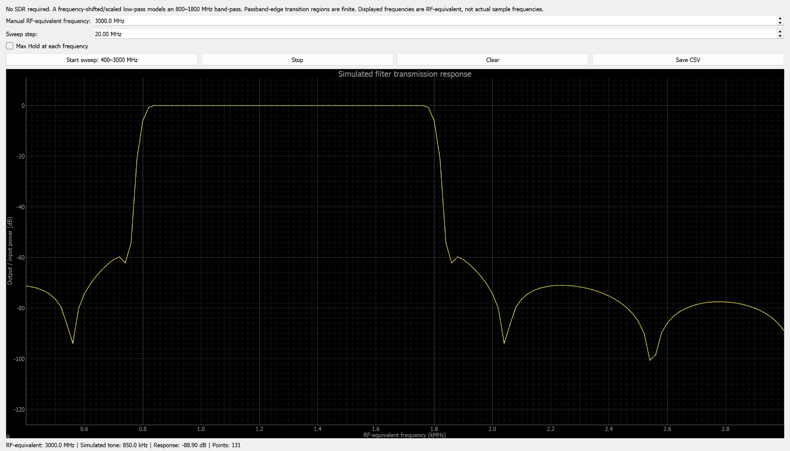
بازکردن نسخهٔ اصلیبرآورد فرکانسهای قطع. بیشینهٔ پاسخ در بخش تخت باند گذر تقریباً است. خطوط شبکه برای تعیین مقیاس محورها به کار رفتند و سطح قطع پایینتر از بیشینه قرار گرفت. تقاطع چپ میان و و تقاطع راست میان و است. با خواندن پاسخها نسبت به بیشینه و درونیابی خطی در مقیاس دسیبل داریم
جدول ۵. فرکانسهای قطع و پهنای باند سهدسیبلی آنتن
| مقدار تقریبی بر حسب مگاهرتز | کمیت |
|---|---|
| فرکانس قطع پایین | |
| فرکانس قطع بالا | |
| پهنای باند |
در لبههای اسمی و ، پاسخ حدود زیر بیشینه است. مقادیر جدول برآوردهای حاصل از تصویرند و دقت آنها به وضوح نمودار و گام جاروب وابسته است.
تکلیف ۶. جدول پیشبینی
پیشبینیهای جدول ۶ در گزارش پسازجلسه با اندازهگیریها مقایسه میشوند. تا زمان تأیید مدل گیرنده و فرکانس آزمون، مقادیر وابسته به دستگاه در ردیفهای ۱ تا ۳ با مدل مرجع تکلیف ۴ برآورد شدهاند. ستون اندازهگیری در جلسه تکمیل میشود.
جدول ۶. پیشبینی آزمایش دوم برای گیرندهٔ گروه
| اندازهگیری | پیشبینی | کمیت | ردیف |
|---|---|---|---|
|
مدل مرجع |
عدد نویز گیرنده در بیشترین بهره (dB) | ۱ | |
|
مدل مرجع |
تغییر عدد نویز وقتی بهره کم شود | ۲ | |
|
تراکم مبدل |
تغییر ورودی وقتی بهره کم شود | ۳ | |
| مقدار با اگر عدد نویز ۷ دسیبل باشد (dB) | ۴ | ||
| افزایش عدد نویز با افزودن تضعیفگر پیش از گیرنده | ۵ | ||
| تغییر سطح محصول مرتبهٔ سوم وقتی توان هر تن زیاد شود | ۶ | ||
|
مدل مکعبی |
آیا برای گیرنده نزدیک خواهد بود؟ چرا؟ | ۷ | |
پس از اعلام بهرهٔ تیم |
عدد نویز و در بهرهٔ اختصاصی تیم | ۸ |
طبق رابطهٔ فریس، در بیشترین بهره عدد نویز به عدد نویز طبقهٔ ورودی نزدیک میشود. کاهش بهره سهم نویز طبقات بعدی را در ورودی افزایش میدهد. از نتایج قسمت ۵ تکلیف ۴ داریم اگر تراکم را مقیاس کامل مبدل تعیین کند، با کاهش بهره، توان ورودی لازم برای رسیدن به همان سطح حدود بیشتر میشود.
در ردیف ۴، با ، از رابطهٔ ضریب نویز و نسبت توانهای گرم و سرد داریم در ردیف ۵، برای تضعیفگر تطبیقیافته در ، تلفات خطی است. طبق رابطهٔ فریس، و عدد نویز به اندازهٔ افزایش مییابد. در ردیف ۶، در ناحیهٔ مکعبی توان IM3 با مکعب توان هر تن متناسب است، پس سطح هر محصول بالا میرود.
در ردیف ۷، اگر یک جملهٔ مکعبی هم تراکم و هم IM3 را تعیین کند، داریم در بهرهٔ صفر مدل، این فاصله حدود بود. اگر بریدگی مبدل غالب باشد، مانند حالت بهرهٔ ۴۰ در مدل، برونیابی مکعبی اعتبار ندارد. ردیف ۸ با اعلام بهرهٔ اختصاصی و مشخص شدن گیرنده و فرکانس آزمون عددگذاری میشود.
تکلیف ۷. فهرست ریسکها
۱. آسیبدیدن ورودی گیرنده بر اثر توان زیاد
تنظیم اشتباه توان ژنراتور یا در نظر گرفتن توان هر تن بهجای توان کل میتواند به طبقهٔ ورودی آسیب بزند. سقف مقرر در بخش ایمنی دستور کار در پورت گیرنده است. پیش از اتصال، بیشترین توان کل منبع و تلفات مسیر، شامل کابل و تضعیفگر، را در فرکانس آزمون بررسی میکنیم. برای دو تن همتوان، توان متوسط کل بیشتر از توان هر تن است. تضعیف را با حاشیهای برای خطای تنظیم توان در نظر میگیریم. خروجی ژنراتور را هنگام وصل و جدا کردن کابل خاموش میگذاریم و جاروب را از کمترین توان آغاز میکنیم. اگر فرستندهٔ SDR جایگزین ژنراتور شود، طبق دستور کار تضعیفگر الزامی است.
۲. خواندن نامعتبر بهعلت تغییر بهره یا تراکم
کنترل خودکار بهره یا تراکم در حالت روشن میتواند بهرهٔ مؤثر را میان دو خوانده تغییر دهد. تراکم در حالت روشن مقدار را کوچک میکند و عدد نویز بیشبرآورد میشود. کنترل خودکار بهره را خاموش میکنیم و با بهرهٔ دستی و فرکانس ثابت، توان نویز هر دو حالت را در همان نوار میانگین میگیریم. میانگینگیری در مقیاس خطی انجام میشود و اختلاف دو توان میانگین بر حسب dBFS، مقدار بر حسب دسیبل است. سطح نویز حالت روشن را طوری انتخاب میکنیم که گیرنده در ناحیهٔ خطی بماند و اختلاف خواندهها از نوسان آنها بزرگتر باشد. در محاسبهٔ عدد نویز، ENR مؤثر در پورت گیرنده را با لحاظ تلفات مسیر به کار میبریم. [2]
۳. برونیابی IIP3 از نقاط نزدیک کف نویز یا بریدگی مبدل
در توان ورودی پایین، خواندهٔ نوار محصول ممکن است عمدتاً نویز باشد. در توان بالا، بریدگی مبدل میتواند محصولهایی ایجاد کند که شیب مکعبی ندارند. هر دو رفتار در آزمون دوتنی با بهرهٔ در تکلیف ۴ دیده شد. کف نویز هر نوار را با ورودی تطبیقیافته و همان بهره میسنجیم. برای برازش، چند سطح ورودی را انتخاب میکنیم که در آنها محصولات IM3 دستکم بالاتر از کف نویز باشند و شیب توان تنها نزدیک و شیب توان محصولات نزدیک دسیبل بهازای هر دسیبل تغییر توان ورودی باشد. اگر بریدگی زود رخ دهد، جاروب را با بهرهٔ کمتر تکرار میکنیم. گزارش IIP3 به بازهای محدود میشود که این دو شیب در آن تأیید شدهاند.